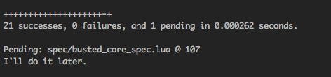
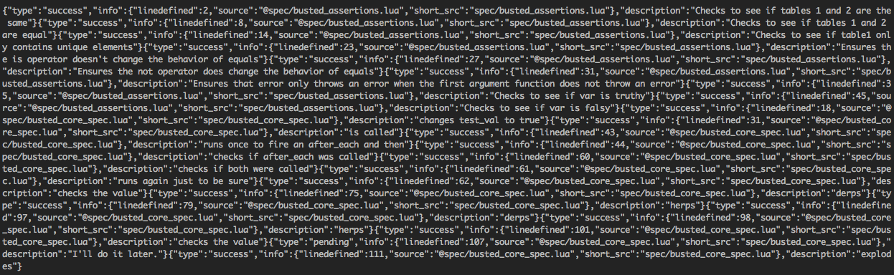
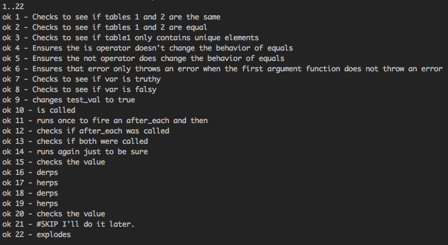

busted is a unit testing framework with a focus on being easy to use. busted works with lua >= 5.1, moonscript, and LuaJIT >= 2.0.0
busted test specs read naturally without being too verbose. You can
even chain asserts and negations, such as assert.not.equals.
Nest blocks of tests with contextual descriptions using describe, and
add tags to blocks so you can run arbitrary groups of tests.
An extensible assert library allows you to extend and craft your own assert functions specific to your case with method chaining. A modular output library lets you add on your own output format, along with the default pretty and plain terminal output, JSON with and without streaming, and TAP-compatible output that allows you to run busted specs within most CI servers. You can even register phrases for internationaliation with custom or built-in language packs.
describe("Busted unit testing framework", function()
describe("should be awesome", function()
it("should be easy to use", function()
assert.truthy("Yup.")
end)
it("should have lots of features", function()
-- deep check comparisons!
assert.are.same({ table = "great"}, { table = "great" })
-- or check by reference!
assert.are_not.equal({ table = "great"}, { table = "great"})
assert.truthy("this is a string") -- truthy: not false or nil
assert.True(1 == 1)
assert.is_true(1 == 1)
assert.falsy(nil)
assert.has_error(function() error("Wat") end, "Wat")
end)
it("should provide some shortcuts to common functions", function()
assert.are.unique({{ thing = 1 }, { thing = 2 }, { thing = 3 }})
end)
it("should have mocks and spies for functional tests", function()
local thing = require("thing_module")
spy.on(thing, "greet")
thing.greet("Hi!")
assert.spy(thing.greet).was.called()
assert.spy(thing.greet).was.called_with("Hi!")
end)
end)
end)
busted test.lua
Install busted through Luarocks. Depending on your environment,
you can apt-get luarocks, brew install
luarocks, or otherwise get it from
luarocks.org. The latest
busted release will always be available on
Moonrocks,
but is also uploaded frequently to luarocks. Optionally follow
the instructions on Moonrocks, and then run
luarocks install busted to install the library and
CLI.
You can also install the latest or a branch by cloning the
busted
repository, and running luarocks make from the
directory.
Usage: busted [OPTIONS] [ROOT]
ROOT test script file/folder. Folders will be
traversed for any file that matches the
--pattern option. (optional, default: spec)
OPTIONS:
--version prints the program's version and exits
--help prints the program's commands
-o, --output=LIBRARY output library to load (default: utf_terminal)
-l, --lua=luajit path to the execution environment (lua or
luajit) (default: )
-d, --cwd=cwd path to current working directory (default: )
-p, --pattern=pattern only run test files matching this pattern
(default: _spec.lua$)
-t, --tags=tags only run tests with these #tags (default: )
-m, --lpath=path optional path to be prefixed to the Lua module
search path (default:
./src/?.lua;./src/?/?.lua;./src/?/init.lua)
--lang=LANG language for error messages (default: en)
-c, --coverage do code coverage analysis (requires 'LuaCov' to
be installed)
-v, --verbose verbose output of errors
-s, --enable-sound executes 'say' command if available
--suppress-pending suppress 'pending' test output
--defer-print defer print to when test suite is complete
Busted 1.6 added a concept of "tasks", or predefined busted
configuration options. You can create a .busted file in the root,
which is automatically loaded if it exists. Default options are
run if no task is specified. You can add any argument available
in the CLI (listed above), using the long name. (Use
verbose = true, not v = true.) Any arguments you specify will
override those set in the task. An example .busted file might
look like:
return {
default = {
verbose = true
},
apiUnit = {
tags = "api",
ROOT = "spec/unit"
verbose = true
}
}
This allows you to run busted --run=apiUnit, which
will run the equivalent of
busted --tags=api --verbose spec/unit. If you only
run busted, it will run the equivalent of
busted --verbose.
Set up your tests using describe and it
blocks. These take a description (to be used for output) and
a callback (which either defines more blocks or contains the
tests themselves. Describe blocks can have more decribe blocks
nested. You can also use the functions before_each
and after_each to define functions that should be
run before any nested tests, and setup and teardown
for functions that should be run before and after the describe block.
You can also use the pending
method to leave a placerholder for a test you plan on writing
later.
Tag your tests with #hashtags to run specific tests. When you
run busted from the command line, add the -t flag to run a
given tag. Seperate tags by commas to run more than one tag.
Describe takes a title and a callback, and can be nested.
describe("a test", function()
-- tests go here
end)
describe("a nested block", function()
describe("can have many describes", function()
-- tests
end)
-- more tests pertaining to the top level
end)
Tag tests using #tags, and run using the -t flag to only run that
test.
describe("a test #tag", function()
-- tests go here
end)
describe("a nested block #another", function()
describe("can have many describes", function()
-- tests
end)
-- more tests pertaining to the top level
end)
busted ./test.lua -t="tag"This runs the first group of tests, but not the second.
busted ./test.lua -t="tag,another"This runs both groups.
An it block takes a title and a callback. Tests fail if an
uncaptured error is thrown (assert functions throw errors for
failed tests).
describe("busted", function()
it("has tests", function()
local obj1 = { test = "yes" }
local obj2 = { test = "yes" }
assert.same(obj1, obj2)
end)
end)
before_each runs before each child test, and
after_each (you guessed it) runs after. setup
runs first in a describe block, and teardown
runs last in a describe block.
describe("busted", function()
local obj1, obj2
local util
setup(function()
util = require("util")
end)
teardown(function()
util = nil
end)
before_each(function()
obj1 = { test = "yes" }
obj2 = { test = "yes" }
end)
it("sets up vars with the before_each", function()
obj2 = { test = "no" }
assert.are_not.same(obj1, obj2)
end)
it("sets up vars with the before_each", function()
-- obj2 is reset thanks to the before_each
assert.same(obj1, obj2)
end)
describe("nested", function()
it("also runs the before_each here", function()
-- if this describe also had a before_each, it would run
-- both, starting with the parents'. You can go n-deep.
end)
end)
end)
Pending functions are placeholders for tests you plan to write (or fix) later.
describe("busted pending tests", function()
pending("I should finish this test later")
end)
Asserts are the core of busted- they're what you use to actually
write your tests. Asserts in busted work by chaining a mod value
by using is or is_not, followed by the assert you wish to use.
It's easy to extend busted and add your own asserts by building an
assert with a commmon signature and registering it.
Busted uses the luassert library to
provide the assertions. Note that some of the assertion/modifiers are Lua keywords (
true, false, nil, function, and
not) and they cannot be used using '.' chaining because that results in compilation
errors. Instead chain using '_' (underscore) or use one or more capitals in the reserved
word, whatever your coding style prefers.
is and is_not flips the expected value
of the assertion; if is_not is used, the assertion
fails if it doesn't throw an error. are,
are_not, has_no, was,
and, was_not are aliased as well
to appease your grammar sensibilities. is
and its aliases are always optional.
describe("some assertions", function()
it("tests positive assertions", function()
assert.is_true(true) -- Lua keyword chained with _
assert.True(true) -- Lua keyword using a capital
assert.are.equal(1, 1)
assert.has.errors(function() error("this should fail") end)
end)
it("tests negative assertions", function()
assert.is_not_true(false)
assert.are_not.equals(1, "1")
assert.has_no.errors(function() end)
end)
end)
Equals takes 1-n arguments and checks if they are the same instance. This is equivalent to calling object1 == object2.
describe("some asserts", function()
it("checks if they're equals", function()
local expected = 1
local obj = expected
assert.are.equals(expected, obj)
end)
end)
Same takes 1-n arguments and checks if they are they are similar by doing a deep compare.
describe("some asserts", function()
it("checks if they're the same", function()
local expected = { name = "Jack" }
local obj = { name = "Jack" }
assert.are.same(expected, obj)
end)
end)
true evaluates if the value is the boolean true; truthy checks
if it's non-false and non-nil (as if you passed it into a boolean
expression in Lua. false and falsy are the opposite;
false checks for the boolean false, falsy checks for false or nil.
describe("some asserts", function()
it("checks true", function()
assert.is_true(true)
assert.is.not_true("Yes")
assert.is.truthy("Yes")
end)
it("checks false", function()
assert.is_false(false)
assert.is.not_false(nil)
assert.is.falsy(nil)
end)
end)
Makes sure an error exception is fired that you expect.
describe("some asserts", function()
it("should throw an error", function()
assert.has_error(function() error("Yup, it errored") end)
assert.has_no.errors(function() end)
end)
it("should throw the error we expect", function()
local errfn = function()
error("DB CONN ERROR")
end
assert.has_error(errfn, "DB CONN ERROR")
end)
end)
Add in your own assertions to reuse commonly written code. You
can register error message keys for both positive (is
and negative (is_not) cases for multilingual
compatibility as well ("en" by default.)
local s = require("say")
local function has_property(state, arguments)
local has_key = false
if not type(arguments[1]) == "table" or #arguments ~= 2 then
return false
end
for key, value in pairs(arguments[1]) do
if key == arguments[2] then
has_key = true
end
end
# state.mod holds true or false, which is true normally, or false if we
# are negating the assertion by using is_not or one of its aliases.
return state.mod == has_key
end
s:set("assertion.has_property.positive", "Expected property %s in:\n%s")
s:set("assertion.has_property.negative", "Expected property %s to not be in:\n%s")
assert:register("assertion", "has_property", has_property, "assertion.has_property.positive", "assertion.has_property.negative")
describe("my table", function()
it("has a name property", function()
assert.has_property({ name = "Jack" }, "name")
end)
end)
Spies are essentially wrappers around functions that keep track
of data about how the function was called, and by default calls
the function. Stubs are the same as spies, except they return
immediately without calling the function. mock(table, stub)
returns a table whose functions have been wrapped in spies or
stubs.
Spies contain two methods: on and new.
spy.on(table, method_name) does an in-place
replacement of a table's method, and when the original method is
called, it registers what it was called with and then calls the
original function.
describe("spies", function()
it("registers a new spy as a callback", function()
local s = spy.new(function() end)
s(1, 2, 3)
s(4, 5, 6)
assert.spy(s).was.called()
assert.spy(s).was.called(2) -- twice!
assert.spy(s).was.called_with(1, 2, 3) -- checks the history
end)
it("replaces an original function", function()
local t = {
greet = function(msg) print(msg) end
}
local s = spy.on(t, "greet")
t.greet("Hey!") -- prints 'Hey!'
assert.spy(t.greet).was_called_with("Hey!")
t.greet:revert() -- reverts the stub
t.greet("Hello!") -- prints 'Hello!', will not pass through the spy
assert.spy(s).was_not_called_with("Hello!")
end)
end)
Stubs act similarly to spies, except they do not call the function they replace. This is useful for testing things like data layers.
describe("stubs", function()
it("replaces an original function", function()
local t = {
greet = function(msg) print(msg) end
}
stub(t, "greet")
t.greet("Hey!") -- DOES NOT print 'Hey!'
assert.stub(t.greet).was.called_with("Hey!")
t.greet:revert() -- reverts the stub
t.greet("Hey!") -- DOES print 'Hey!'
end)
end)
Mocks are tables whose functions have been wrapped in spies, or optionally stubs. This is useful for checking execution chains. Wrapping is recursive, so wrapping functions in sub-tables as well.
describe("mocks", function()
it("replaces a table with spies", function()
local t = {
thing = function(msg) print(msg) end
}
local m = mock(t) -- mocks the table with spies, so it will print
m.thing("Coffee")
assert.spy(m.thing).was.called_with("Coffee")
end)
it("replaces a table with stubs", function()
local t = {
thing = function(msg) print(msg) end
}
local m = mock(t, true) -- mocks the table with stubs, so it will not print
m.thing("Coffee")
assert.stub(m.thing).was.called_with("Coffee")
end)
end)
Sometimes you need to write tests that work with asynchronous calls such as when dealing with HTTP requests, threads, or database calls.
-- you will need libev to run the following example which uses 'ev'
local ev = require'ev'
-- `asynchronous_call` is function to act as our asynchronous, time-taking test. In
-- reality, you'll call out to your asynchronous code instead.
local asynchronous_call = function(on_timeout)
ev.Timer.new(function()
on_timeout()
end,0.01):start(ev.Loop.default)
end
-- specify the loop framework ('copas' or 'ev')
setloop('ev')
describe('Some async stuff', function()
-- The callbacks for `setup`, `teardown`, `before_each`, `after_each` and `it` all
-- get a "done" parameter. This parameter is a callback function that must be called
-- to report the test as succesful.
it('make some async test',function(done) -- `done` callback provided by busted
-- The asynchroneous callback itself must be wrapped in `async`, this will notify busted
-- in case of a failure. If it fails outside the callback the test will hang forever
-- (timeouts have not been implemented yet).
asynchronous_call(async(function() -- wrap in `async` to catch any errors
assert.is_true(true) -- an error inside `async` will be reported as a failure
done() -- calling `done` will be reported as success
end))
end)
end)
Before Busted executes any tests it will define a global _TEST that
can be used to expose private elements only in case of testing.
-- a new module with private elements to be tested
local mymodule = {}
local private_element = {"this", "is", "private"}
function mymodule:display()
print(string.concat(private_element, " "))
end
-- export locals for test
if _TEST then
-- setup test alias for private elements using a modified name
mymodule._private_element = private_element
end
return mymodule
In the test specs it can be tested;
local mymodule = require("mymodule")
describe("Going to test a private element", function()
it("tests the length of the table", function()
assert.is.equal(#mymodule._private_element, 3)
end)
end)
Busted supports several output types by default, and it's easy to extend busted to include your own output types.
Uses ansicolors and utf to display a concise but informative output.
Uses safe characters and no coloring.
Useful for streaming or loading all results at once with the --defer-print flag.
TAP is an agnostic protocol used by most automated testing suites.

If you pass the -o flag a path instead of a name (such as in busted spec -o thing.lua, it will look
in that path to load the output file. Check out the
existing output files
for examples. It should have a signature like:
-- custom_output.lua
local output = function()
return {
header = function(context_tree)
-- return if you want to write something specific at the top of the output
end,
footer = function(context_tree)
-- return if you want to write something specific at the bottom of the output
end
formatted_status = function(statuses, options, ms)
-- displays at the end of the test. options contains options passed
-- into the busted CLI, and ms is the ms spent running the tests.
-- statuses is a list of test statuses after being run. You usually
-- only return if options.defer_print.
end
currently_executing = function(test_status, options)
-- Fired off if options.defer_print is not true. You probably want to
-- io.write() a status and then io.flush() to write it to output.
end
}
end
return output
Moonscript is a dynamic scripting language that compiles to Lua. Busted supports Moonscript natively without any additional compilation steps, and will redirect line numbers to show the proper line numbers for failing tests.
#source: moonscript_spec.moon
describe "moonscript tests", ->
it "runs", ->
assert.are.equal true, true
it "fails", ->
assert.error(-> assert.are.equal false, true)
describe "async moonscript tests", ->
it "runs async tests", async, (done) ->
some_asynchronous_call(guard ->
assert.is_true true
done()
)
Busted supports English (en), Arabic (ar), French (fr), Dutch (nl), Russian (ru), German (de), Japanese (ja), Chinese (zh), and Ukranian (ua) by default. Check out the existing language packs and send in a pull request.
Busted supports adding in new languages easily. Pass a --lang
parameter to choose one of the built-in languages, or a path
to a lua file to run containing your own language. Don't forget
to submit languages in pull requests as you make them!
Check out the existing language packs
to see a template for what you should replace. Copy any of the
existing files. It uses the say
string key/value store for registration.
Examples: busted spec --lang=ar or
busted spec --lang=se.lua
You can help! It's as easy as submitting a suggestion or issue, or check out the code for yourself and submit your changes in a pull request. We could especially use help with translations - check out the src/languages folder in busted and luassert to see if you can help.
And many thanks to the libraries that help make busted possible!